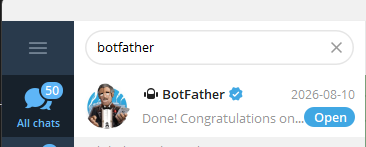
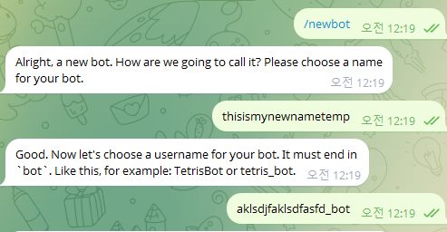
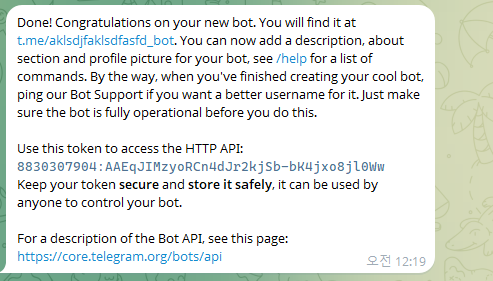
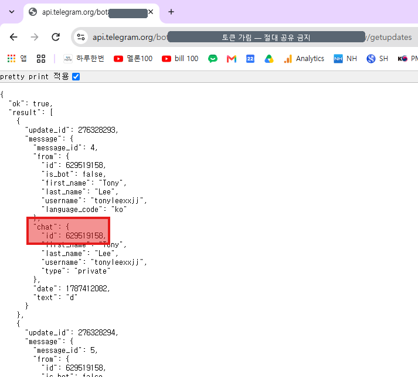
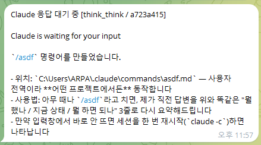

Hooks — 자동화의 첫 경험
규칙(CLAUDE.md)·명령(슬래시)으로 길들였다면 — 이제 Claude가 먼저 말을 걸게 할 차례. "이런 일이 일어나면, 자동으로 이걸 실행" — 이벤트 기반 자동화. 이벤트 종류는 여러 가지지만 이번 덱에서는 Stop 한 개만.
Claude의 사이클 안에 끼어 넣는 자동 실행.
Claude가 일하는 흐름 — 요청을 받고, 실행하고, 응답을 마치는 각 지점에 본인 셸 명령을 끼워 넣을 수 있습니다.
Hook 이벤트 — 대표 6가지 (외울 필요 X)
PreToolUse
도구 사용 전 — 차단·검증.예) 중요한 파일을 지우기 전 확인
PostToolUse
도구 사용 직후 — 후속 작업.예) 파일을 수정하면 백업본 저장
Stop ★
응답 끝났을 때 — 이번 덱에서 만들 알림.예) 텔레그램으로 "작업 끝" 알림
UserPromptSubmit
메시지 보낼 때 — 검증·기록.예) 메시지 보낼 때마다 시각 기록
Notification
Claude가 알림 띄울 때 — 알림 연동.예) Claude가 물어볼 때 소리로 알림
SubagentStop
서브에이전트(5장에서 배울) 작업 끝.예) 긴 작업 끝 → 요약 보여주기
6개 다 외울 필요 X — Stop 하나로 시작하면 충분. 나머지는 필요할 때.
Claude 응답 끝나면
휴대폰에 알림.
긴 작업 시키고 다른 일 하다가, 응답이 왔는지 확인하러 노트북 보러 가는 일 → 사라집니다. 휴대폰이 알려줌.
실무에서 가장 자주 보는 Hook 3가지
① Stop · 응답 끝 알림 ★
긴 작업 시키고 다른 일 → 휴대폰 알림 → 복귀.
② PostToolUse · 저장 후 포맷
파일 저장될 때마다 자동 포맷 → 일관성 ↑.
③ PreToolUse · 커밋 전 테스트
git commit 직전 pytest — 깨지면 커밋 차단.
이번 덱에서는 ① Stop 알림 한 개만 실습. ②·③은 익숙해진 후 본인 워크플로우에 맞춰 추가.
"처음엔 2~3개만" — 이 원칙 지키기.
Hook은 자동화의 시작이지만 너무 많이 깔면 디버깅 불가. 어떤 Hook이 어떤 결과를 낸 건지 못 추적.
Telegram 설치 — 휴대폰·PC 둘 다
휴대폰 — App Store / Play Store에서 Telegram 검색 → 설치
앱 실행 → 본인 휴대폰 번호로 가입(SMS 인증) → 이름·아이디 설정
PC — telegram.org/desktop ↗에서 데스크톱 앱도 설치 → 같은 번호로 로그인
상단 검색창(돋보기)에 BotFather 입력 → 파란 인증배지 붙은 @BotFather 선택 → 채팅 열리면 하단 시작(Start) 탭
둘 다 필요합니다 — 휴대폰은 알림을 받는 곳, PC는 토큰·chat_id를 복사해 붙여넣는 곳. 이미 Telegram 쓰던 분은 3번부터.
/newbot — 토큰 발급
BotFather 대화
@BotFather 채팅창에 — 아래를 한 줄씩 메시지로 보냅니다.
/newbot입력- 봇 이름 (예:
Claude Notify) - 봇 username (영문, 끝이
bot— 예:claude_notify_bot) - 토큰 받음 → 복사해서 메모장에

토큰 = 비밀번호와 같음. 단톡방·코드에 직접 적지 마세요. 메모장에 임시 저장 → 환경변수로 사용.
BotFather 화면 — 이렇게 주고받습니다


@BotFather 채팅에 /newbot을 보내면 — 이름·username을 차례로 물어봅니다. 마지막에 오는 긴 문자열이 토큰. 위 캡처는 수업 끝나면 폐기할 실습용 봇이라 토큰을 그대로 공개한 것 — 본인 토큰은 절대 노출하지 마세요.
본인 봇과 첫 대화 → chat_id 받기
단계
- 봇 생성 직후 BotFather 메시지에 뜨는
t.me/claude_notify_bot링크(= 내 봇 주소) 클릭 → 본인 봇 화면 열림 - "+ Start" 버튼 → "안녕" 한 번 보내기
- 브라우저로
api.telegram.org/bot<TOKEN>/getUpdates - JSON에서
"chat":{"id":...}숫자 복사
<TOKEN>은 부등호 < >까지 통째로 본인 토큰으로 교체. 봇과 한 번이라도 대화해야 getUpdates에 chat이 나타납니다 — result가 []로 비어 있으면 봇에 채팅을 몇 번 더 보낸 뒤 브라우저에서 F5로 새로고침.
getUpdates 화면에서 — chat_id 찾기

어디를 보나
"chat"→"id"뒤의 숫자가 chat_id- 따옴표·중괄호 빼고 — 숫자만 복사
- 결과가
[]로 비면 — 봇에 메시지 보내고 F5
이 숫자가 다음 단계 settings.json의 <CHAT_ID> 자리에 들어갑니다. 주소창에는 토큰이 그대로 드러납니다 — 이 캡처는 폐기할 실습용 봇이라 공개했지만, 본인 화면은 캡처·공유 금지.
Stop 훅 — Claude에게 맡기기
전역 설정(~/.claude/settings.json)에 Stop 훅을 추가해줘. Claude 응답이 끝날 때마다 텔레그램으로 "Claude Done" 메시지가 오게. 봇 토큰: <TOKEN> chat_id: <CHAT_ID> 내 컴퓨터 환경에 맞는 방식으로 넣고, 알림이 깨지지 않게 해줘. 다 되면 어떻게 확인하는지도 알려줘.
알림이 ???처럼 깨져서 오면 — Claude에게 "텔레그램 알림 한글이 깨져요, 고쳐줘" 한 줄이면 인코딩까지 잡아 줍니다.
복사해서 Claude에게 붙여넣고 — <TOKEN>·<CHAT_ID>만 본인 값으로 교체하세요(부등호 < >까지 통째로). 파일을 직접 열 필요 없습니다 — Claude가 전역 settings.json을 만들고, 권한을 물으면 허용하면 끝. 전역이라 어느 폴더에서 켜든 알림이 옵니다.
짧은 명령 → 휴대폰 알림 확인
알림 안 오면: ① TOKEN 오타 ② chat_id 오타 ③ Claude 재시작 안 함 ④ 인터넷 차단(사내망) — 이 4가지 우선 점검.
휴대폰에 이렇게 도착하면 성공

성공 신호
- 잠금화면·상단바에 텔레그램 푸시 배너
- 봇 채팅에
Claude Done한 줄 - 응답을 끝낼 때마다 — 자동으로 다시 도착
안 오면 앞 슬라이드의 4가지 점검부터.
여기까지 오면 Stop 훅 완성 — Claude가 일을 끝낼 때마다 휴대폰이 알려줍니다.
여기까지 되면 — Stop 훅 완성
Claude → 텔레그램 · 한 방향.
다음 슬라이드에서 세팅만 간단히.
전원 휴대폰에 알림이 떴는지 확인 — 안 떴으면 지금 손드세요.
폰에서 Claude에게 — Orca 리모트 세팅
세팅 — 앱 설치 + 페어링
- 휴대폰 브라우저로 onorca.dev ↗ 접속 → 모바일 앱 설치 버튼
- iOS는 사이트의 App Store·TestFlight 버튼으로, Android는 APK 파일을 내려받아 설치 — "출처 불명 앱" 경고가 뜨면 허용
- 앱 실행 → 데스크톱과 같은 계정으로 로그인(필수) → Pair Desktop으로 연결
- 끝 — PC에서 돌던 Claude 세션이 폰 화면에 그대로, 명령도 폰에서 바로
알아두기
- 아직 정식 출시 전 — 스토어 검색이 아니라 사이트를 거쳐 설치합니다
- 업데이트가 나오면 재설치가 종종 필요 — 낯설 수 있지만 같은 과정 반복이면 됩니다
- 방금 만든 텔레그램 알림과 한 세트 — 알림으로 끝난 시점 확인 → 폰에서 다음 명령
Stop 훅이 "끝났다"를 알려주면, 리모트로 그 자리에서 이어서 시킵니다 — 자리를 비울 때 진가가 나옵니다. 수업에선 여기까지, 설치는 각자 해보세요.
Claude Code를 넓히는 MCP · Skill · Plugin
외부 도구 연결
파일·DB·다른 서비스에 Claude가 접근하도록 잇는 통로 — 기능을 바깥으로 확장합니다.
반복 작업을 /명령어로
자주 하는 작업을 슬래시 명령 하나로 — 긴 지시를 한 줄로. 예: 이 장에서 만든 /asdf.
묶어서 설치하는 패키지
MCP·Skill·Hook을 하나로 묶어 /plugin install로 설치 — 가장 큰 단위.
Plugin이 가장 큰 단위 — 그 안에 MCP·Skill이 들어 있습니다. 방금 만든 /asdf가 Skill, 텔레그램 알림이 Hook — 이걸 묶어 배포하면 Plugin. MCP는 6장에서 직접 붙여 봅니다.